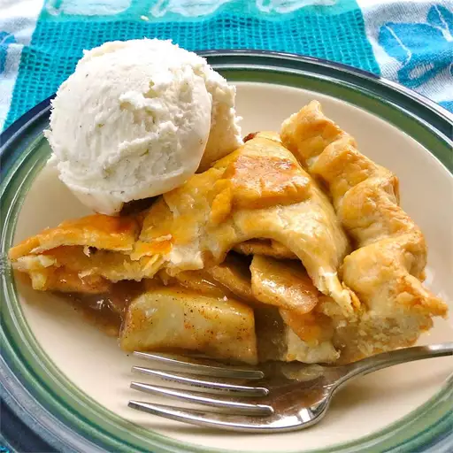

Home
Apple Pie

Description
This double-crust apple pie is easy to make and delicious to eat.
Home cooks love the classic, familiar diner-style flavor of this pie.
Ingredients
- 1 (14.1 ounce) package pastry for a double-crust 9-inch pie
- 7 cups peeled, cored and sliced apples
- 1 cup white sugar
- 3 tablespoons all-purpose flour
- 1 teaspoon ground cinnamon
- ¼ teaspoon salt
- ⅛ teaspoon ground nutmeg
- 2 tablespoons butter
Steps
- Preheat the oven to 425 degrees F (220 degrees C). Line a 9-inch pie plate with bottom crust.
- Combine apples, sugar, flour, cinnamon, salt, and nutmeg in a bowl. Place mixture into the prepared pie plate. Dot with butter. Cover with top crust and seal. Cut holes in top crust to allow venting.
- Bake in the preheated oven for 10 minutes.
- Reduce the oven temperature to 300 degrees F (150 degrees C) and bake until crust is golden brown and apples are tender, 40 for 50 minutes. Cool and serve.